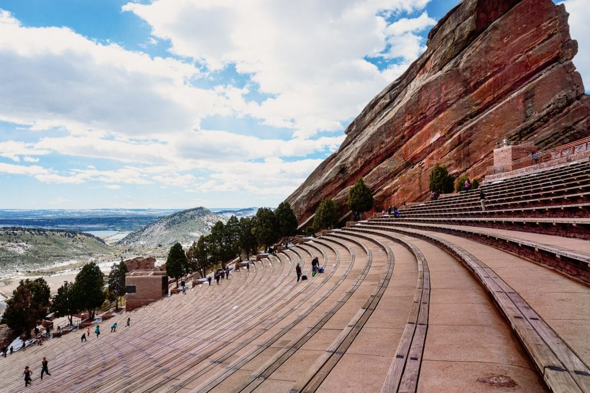

Colorado ist ein Bundesstaat im westlichen bis zentralen Teil der Vereinigten Staaten von Amerika.
Als Teil der Mountain States von der Gebirgskette der Rocky Mountains durchzogen, ist Colorado mit einer mittleren Höhe von 2073 Metern der
höchstgelegene Bundesstaat der USA.
Der „Jahrhundert-Staat“, Centennial State, ging 1876, also genau 100 Jahre nach der Unabhängigkeitserklärung der Vereinigten Staaten, aus dem Colorado-Territorium
hervor, das 1861 auf dem Höhepunkt des Pikes Peak Goldrausches gegründet worden war. Hauptstadt und wirtschaftliches Zentrum ist Denver, in dessen Großraum mehr
als die Hälfte der sechs Millionen Einwohner Colorados lebt. Weitere bedeutende Städte sind Colorado Springs und Fort Collins. Seinen Namen erhielt der Staat vom
Colorado River, der von den früheren spanischen Beherrschern des Gebietes so genannt wurde wegen des rötlichen (spanisch: colorado) Schlamms, den er mit sich führt.
Quellen- und Lizenzhinweis:
Dieser Text basiert auf dem Wikipedia-Artikel
Colorado
(geänderte Fassung) und steht unter der Lizenz
Creative Commons Attribution-ShareAlike 4.0 International (CC BY-SA 4.0).
Das Bild ist von
coconut-sports.de